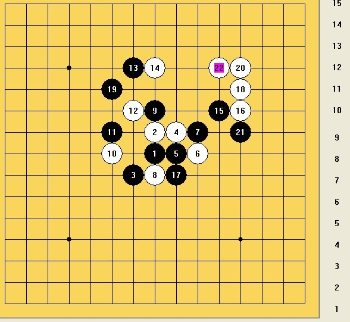
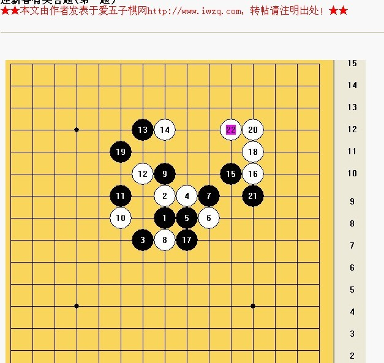
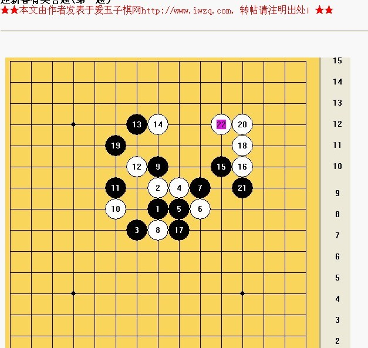

迎新春有奖答题(第一题）
#1 迎新春有奖答题(第一题） 作者：浩瀚铭剑 发表时间：2010-1-18 0:00:01

题目要求：1是黑必胜吗？写出你的答案 2是白必胜吗？写出你的答案
参与答题的朋友 把这题的答案发送到haohanqishe@126.com邮箱里面
［此帖子已被 浩瀚铭剑 在 2010-1-18 0:26:37 编辑过］
［此帖子已被 潇洒 在 2010-1-18 0:32:04 编辑过］
［此帖子已被 潇洒 在 2010-1-18 0:33:20 编辑过］
［ 逆刃 于 2010-1-18 18:47:11 时花20金币送鲜花一朵］
［ 有志青年 于 2010-1-28 10:02:15 时奖励此帖[金币加 20 威望加1］
［ 浩瀚棋社清清 于 2010-1-31 23:54:56 时花20金币送鲜花一朵］
#2 Re:迎新春有奖答题(第一题） 作者：南京小飞机 发表时间：2010-1-18 0:00:50
图看不见…… 
［此帖子已被 南京小飞机 在 2010-1-18 0:04:35 编辑过］
#3 Re:迎新春有奖答题(第一题） 作者：南京小飞机 发表时间：2010-1-18 0:06:05
LZ题目 如2楼所示 各位讲究这看
各位讲究这看
#4 Re:迎新春有奖答题(第一题） 作者：浩瀚铭剑 发表时间：2010-1-18 0:18:23
谢谢小飞机和潇洒大师
开始不知道只能浏览上传才能发图 晕。。
［此帖子已被 浩瀚铭剑 在 2010-1-18 0:36:36 编辑过］
［此帖子已被 浩瀚铭剑 在 2010-1-18 0:39:20 编辑过］
#5 Re:迎新春有奖答题(第一题） 作者：江南新绿 发表时间：2010-1-18 2:51:02
友情提醒，千万不要开着黑石和终结者做。否则没等你看清是什么题目呢。软件已经做出来了。
［ 浩瀚铭剑 于 2010-1-18 7:42:03 时奖励此帖[金币加 20 威望加1］
#6 Re:Re:迎新春有奖答题(第一题） 作者：江南新绿 发表时间：2010-1-18 7:47:41
 ttt.rar
ttt.rar答案，不过已经加密，请勿下载，谢谢。
#7 Re:迎新春有奖答题(第一题） 作者：屏蔽 发表时间：2010-1-18 10:35:38
既不希望开软件，又希望答案能以终结谱的形式做出来？XD#8 Re:迎新春有奖答题(第一题） 作者：17号蓝星仔 发表时间：2010-1-18 11:01:02
晕~~~还友情提示~~~ 不知这位江南小弟是不是自个开了软件发现很搞定了~~~#9 Re:迎新春有奖答题(第一题） 作者：江南新绿 发表时间：2010-1-18 11:32:41
to 8 楼，算我没有说好了。反正大家就是图个乐。#10 Re:Re:迎新春有奖答题(第一题） 作者：屏蔽 发表时间：2010-1-18 11:47:15
to 10
没有别的意思，我只不过觉得有些题目做起来容易终结起来麻烦，我没有终结者的话就不会手动打一个地毯谱出来。况且（我个人理解）题目本身应该是交给人脑去做的，用软件辅助的话就不太对劲了。然而这里有一个矛盾，题目做对了还好，用软件打一个地毯谱出来；如果做错了，在给软件打地毯的时候就有可能意识到错误并被提示修正，那这样就不完全是自己做出来的了。
#11 Re:迎新春有奖答题(第一题） 作者：心上人 发表时间：2010-1-18 11:59:38
这样也不错啊，看看大家的水平#12 Re:迎新春有奖答题(第一题） 作者：心上人 发表时间：2010-1-18 12:39:11
这局白赢！！！=======上图对应的爱五子棋谱代码如下，以便你拆解：========
h8h9g7i9i8j8j9h7h10f8f9g10g12h12k10l10i7l11f11l12l9k12i10i12j12h11j13h13k5j6j11j10j14j15m8n7j5k9i11n12m11h15h14m13k11l14l13k15o11i15
======================================================
#13 Re:迎新春有奖答题(第一题） 作者：gerbo 发表时间：2010-1-18 18:02:02
俺认为黑胜了。
#14 Re:迎新春有奖答题(第一题） 作者：gerbo 发表时间：2010-1-18 18:04:41
编辑掉俺的图。。。
［此帖子已被 gerbo 在 2010-1-18 18:27:32 编辑过］
#15 Re:迎新春有奖答题(第一题） 作者：浩瀚铭剑 发表时间：2010-1-18 18:05:18
希望12楼 13楼的朋友 把答案发送到haohanqishe@126.com邮箱里面 谢谢合作［此帖子已被 浩瀚铭剑 在 2010-1-18 18:07:10 编辑过］
［此帖子已被 浩瀚铭剑 在 2010-1-18 18:08:06 编辑过］
#16 Re:迎新春有奖答题(第一题） 作者：浩瀚铭剑 发表时间：2010-1-18 18:17:05
提醒： 请各位朋友不要把答案更贴发送出来 希望朋友们把答案发送到haohanqishe@126.com邮箱里面 谢谢合作#17 Re:迎新春有奖答题(第一题） 作者：忧郁的双眼 发表时间：2010-1-18 21:07:47
应该分目测题跟终结题
#18 Re:迎新春有奖答题(第一题） 作者：浩瀚铭剑 发表时间：2010-1-18 21:28:17
呵呵 这个到时候在讨论#19 Re:迎新春有奖答题(第一题） 作者：gerbo 发表时间：2010-1-19 12:14:50
 估计俺没希望了。。都这时候了。。这题的白无用的冲很繁琐。小黑那个跳活三的棋改成反向活三就基本对路了。看好江南的。
估计俺没希望了。。都这时候了。。这题的白无用的冲很繁琐。小黑那个跳活三的棋改成反向活三就基本对路了。看好江南的。
#20 Re:迎新春有奖答题(第一题） 作者：心上人 发表时间：2010-1-19 12:46:43
已经发走了，请查收#21 Re:Re:迎新春有奖答题(第一题） 作者：浩瀚铭剑 发表时间：2010-1-19 16:35:20
引用：
原文由 gerbo 发表于 2010-1-19 12:14:50 :
哇哈哈 也不一定啊没有希望啊
#22 Re:迎新春有奖答题(第一题） 作者：我就不信注册不上 发表时间：2010-1-21 0:28:28
凭感觉：黑胜，第一步F13［ 浩瀚铭剑 于 2010-1-24 20:36:02 时奖励此帖[金币加 20 威望加1］
#23 Re:Re:迎新春有奖答题(第一题） 作者：屏蔽 发表时间：2010-1-25 0:14:34
引用：
原文由 我就不信注册不上 发表于 2010-1-21 0:28:28 :
凭感觉：黑胜，第一步F13［ 浩瀚铭剑 于 2010-1-24 20:36:02 时奖励此帖[金币加 20 威望加1］
早知道我也来这么一句混威望了（捶地XD
#24 Re:迎新春有奖答题(第一题） 作者：浩瀚铭剑 发表时间：2010-1-25 0:41:38
迎新春有奖答题(第一题） 获奖名单
第一名：江南新绿
第二名：心上人
请这两位朋友在下面更贴告诉我你们的QQ号码和要什么QQ钻 谢谢合作
这道题的答案是：黑必胜，正解黑走F13
#25 Re:迎新春有奖答题(第一题） 作者：江南新绿 发表时间：2010-1-25 3:08:00
公布6楼密码是 23
［ 浩瀚铭剑 于 2010-1-25 12:08:47 时奖励此帖[金币加 20 威望加1］
［ 浩瀚铭剑 于 2010-1-25 12:09:14 时奖励此帖[金币加 20 威望加1］
#26 Re:迎新春有奖答题(第一题） 作者：心上人 发表时间：2010-1-27 9:42:12
本人的QQ是406940236，至于QQ钻你最好给个永久的。我好在QQ里面玩游戏。［ 浩瀚铭剑 于 2010-1-27 10:46:38 时奖励此帖[金币加 20 威望加1］